Avaliação da Segurança
Esta página apresenta a execução da avaliação e os resultados da coleta de dados para o objetivo GQM de Segurança do i-Educar.
1. Introdução
O objetivo de qualidade definido na Fase 2 para a característica Segurança foi o de analisar o código-fonte do i-Educar com o propósito de avaliar a proteção do sistema contra ameaças comuns, do ponto de vista do mantenedor, garantindo conformidade com a LGPD [1] e com práticas de desenvolvimento seguro.
A avaliação da segurança é particularmente crítica no contexto do i-Educar porque o sistema lida diretamente com informações sensíveis de alunos, responsáveis e servidores da educação básica, incluindo dados pessoais e registros acadêmicos de menores de idade. Assim, qualquer falha de segurança pode gerar violação de privacidade, danos legais e exposição indevida de informações protegidas pela legislação brasileira.
A partir desse objetivo, a investigação foi direcionada para três eixos principais:
Controle de Acesso e Credenciais — Analisar como o sistema gerencia senhas, autenticação e expiração de sessão, garantindo que somente usuários autorizados acessem as funcionalidades (Métricas M1.1, M1.2 e M1.3), conforme recomendações do OWASP Top 10 [2] e de guias técnicos de segurança [3][4].
Monitoramento e Auditoria — Verificar se ações críticas do sistema são registradas adequadamente para permitir rastreabilidade e suporte a auditorias de segurança (Métricas M2.1 e M2.2), seguindo recomendações de monitoramento seguro [5].
Desenvolvimento Seguro — Avaliar indícios de maturidade do processo de desenvolvimento, como testes de segurança e atualização de dependências, fatores essenciais para prevenção de vulnerabilidades (Métricas M3.1 e M3.2), de acordo com princípios essenciais em engenharia de software moderna [6][7].
2. Referencial Teórico
A avaliação de segurança toma como base principalmente o OWASP Top 10 [2], referência internacional sobre riscos em aplicações web, e princípios da Lei Geral de Proteção de Dados (LGPD) relacionados à proteção de informações pessoais [1]. Cada métrica está associada diretamente a um tipo específico de risco descrito pela OWASP.
Controle de Acesso e Credenciais (OWASP A01 – Broken Access Control / OWASP A02 – Cryptographic Failures)
O controle de acesso é uma das áreas mais sensíveis em sistemas que manipulam dados confidenciais. Segundo o OWASP, falhas nessa camada — conhecidas como Broken Access Control — permitem que usuários realizem ações fora de seu perfil, como acessar registros de outros alunos ou modificar dados que não deveriam.
Controle de Acesso e Sessão (M1.1 e M1.3): Verificar se rotas críticas possuem regras de autorização e se as sessões são expiradas após períodos adequados ajuda a identificar potenciais brechas relacionadas ao OWASP A01 [2]. Sessões longas ou uso inadequado de perfis podem facilitar ataques de sequestro de sessão (session hijacking) [8][10].
Armazenamento Criptográfico de Senhas (M1.2): O armazenamento incorreto de senhas é caracterizado pelo OWASP A02 – Cryptographic Failures [2]. Senhas devem ser protegidas por funções de hashing modernas e lentas, como Argon2 ou Bcrypt, que, segundo literatura clássica de criptografia, são resistentes a ataques de força bruta por serem memory-hard [9]. Algoritmos antigos como MD5 e SHA-1 não são mais considerados seguros e violam diretrizes da LGPD sobre proteção de dados pessoais.
Logs e Monitoramento (OWASP A09 – Insufficient Logging & Monitoring)
O registro de atividades críticas do sistema é essencial para rastreamento de incidentes, auditorias e detecção de comportamentos suspeitos. De acordo com o OWASP, a falta de logs ou a presença de logs incompletos inviabiliza qualquer resposta a incidentes.
Registro de Ações Críticas (M2.1): A métrica avalia o quanto das ações sensíveis (como login, exclusão e alteração de dados) são efetivamente registradas.
Completude das Entradas de Log (M2.2): Não basta apenas registrar um evento; é necessário incluir campos mínimos como usuário, ação executada e data/hora. Logs incompletos dificultam auditorias forenses e atendem diretamente ao problema descrito pelo OWASP A09 [2]. De acordo com o OWASP Logging Cheat Sheet [5], um log eficiente deve conter usuário, ação e data/hora, requisitos que foram utilizados para avaliar essa métrica.
Desenvolvimento Seguro (OWASP A06 – Vulnerable and Outdated Components)
A maturidade do processo de desenvolvimento também influencia diretamente a segurança do sistema. A importância dos testes de segurança é discutida amplamente na literatura acadêmica, como nos trabalhos de Vieira, Melo e Madeira [7], que mostram como testes específicos podem prevenir vulnerabilidades exploráveis.
Testes de Segurança (M3.1): Avaliar a proporção de testes automatizados relacionados à segurança revela o quanto o projeto busca prevenir vulnerabilidades como XSS, SQL Injection ou manipulação indevida de entrada. Projetos com baixa densidade de testes tendem a acumular riscos.
Atualização de Dependências (M3.2): Dependências desatualizadas representam um risco destacado pelo OWASP A06 – Vulnerable and Outdated Components [2]. Como a maioria dos ataques modernos explora falhas conhecidas em bibliotecas de terceiros, manter o ciclo de atualização curto (≤ 6 meses) reduz significativamente a superfície de ataque.
3. Coleta e Análise das Métricas
Aqui são apresentados os dados brutos, a classificação e a análise individual de cada métrica de Segurança.
M1.1: Percentual de rotas críticas com regras de autorização
Evidências e Dados Brutos
- Método: Revisão de código fonte (ex: arquivos de rota, controllers).
- Rotas consideradas críticas: Rotas que alteram dados, como POST, PUT, PATCH e DELETE.
- Rotas críticas analisadas:
- POST /matricula/{...}/enturmar/{...}
-
Permissão: modify:enrollment (Enturmar matrícula) 2. POST /matricula/{...}/remanejar/{...} * Permissão: modify:relocate (Remanejar matrícula) 3. POST /atualiza-situacao-matriculas * Permissão: modify:update_registration_status (Atualizar situação de matrículas) 4. POST /exportacoes/exportar * Permissão: modify:data_export (Exportação de dados) 5. POST /arquivo/exportacoes/novo * Permissão: modify:document_export (Exportação de documentos) 6. POST /avisos/publicacao/criar * Permissão: create:announcement (Criar avisos) 7. POST /avisos/publicacao/{...}/editar * Permissão: modify:announcement (Editar avisos) 8. POST /importacao-situacao-final/upload * Permissão: modify:final_status_import (Importar situação final) 9. POST /importacao-situacao-final/importar * Permissão: modify:final_status_import (Importar situação final) 10. POST /atualiza-data-entrada * Permissão: modify:update_registration_date (Atualizar data de entrada) 11. POST /atualiza-etapa * Permissão: modify:stage (Atualizar etapa) 12. POST /ano-letivo-em-lote/processar * Permissão: modify:academic_year_import (Importar ano letivo em lote) 13. POST /atualizacao-em-lote-series-escola/processo * Permissão: modify:school_grade (Atualizar séries da escola em lote) 14. POST /bloquear-enturmacao * Permissão: modify:block_enrollment (Bloquear enturmação) 15. POST /dispensa-lote * Permissão: modify:batch_exemption (Dispensar em lote)
- Dados Coletados:
- Total de rotas críticas: 97
- Rotas com checagem de autorização: 15
- Cálculo:
([Com Autorização] / [Total]) * 100= 15,46%
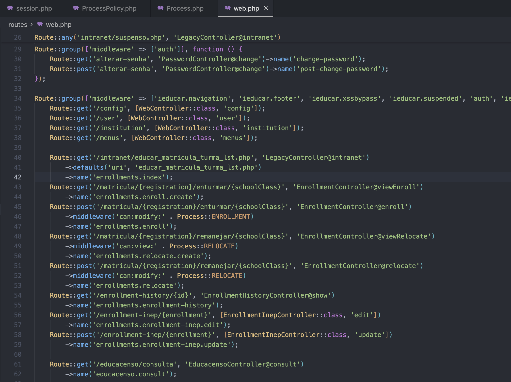 Linhas 45 e 48 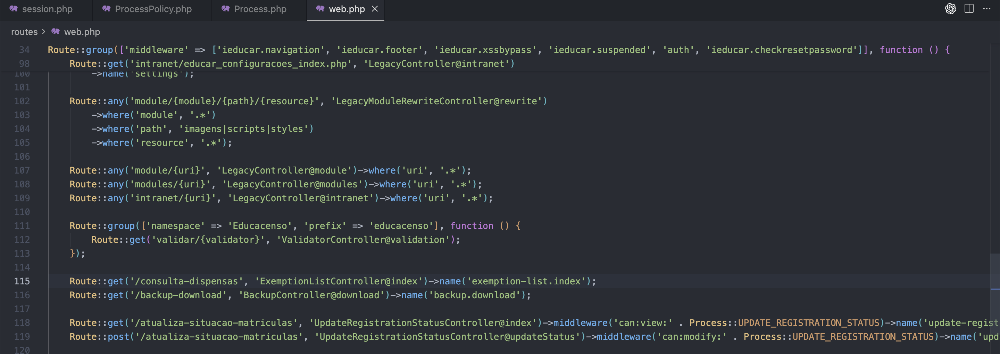 Linha 119
 Linhas 134 e 138
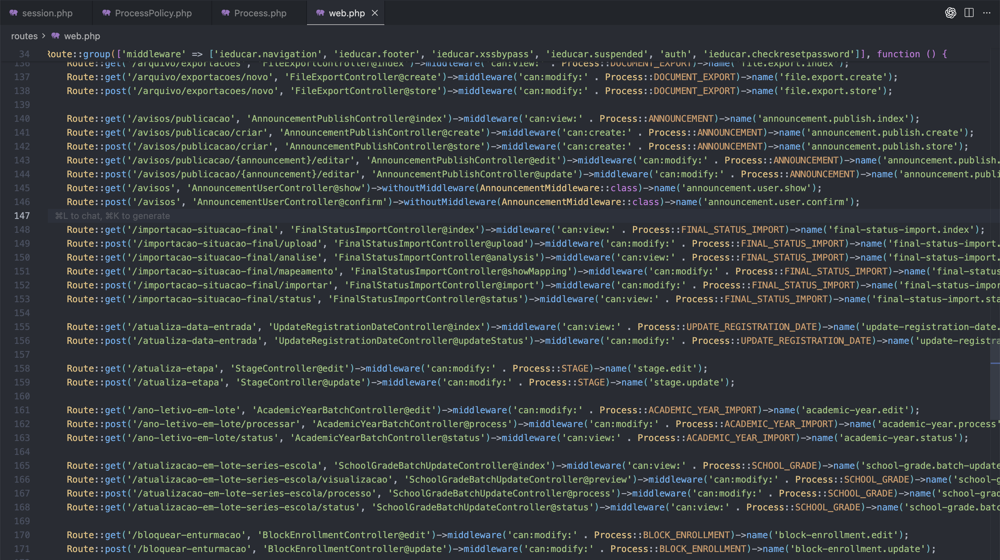
Linhas: 142, 144, 149, 152, 156, 159, 162, 167, 171
Linhas 134 e 138
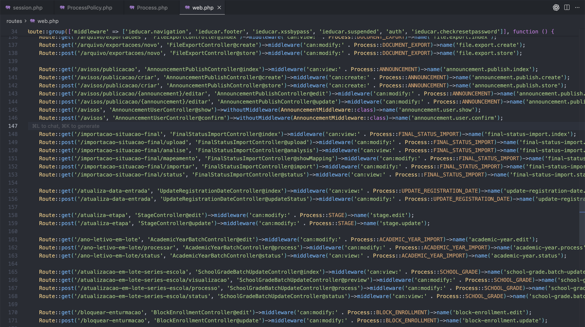
Linhas: 142, 144, 149, 152, 156, 159, 162, 167, 171
 Linha 189
Linha 189 - Dados Coletados:
Classificação da Métrica
- Resultado: 15,46%
- Critério (da Fase 2):
- Excelente: ≥ 90%
- Bom: 70% a 89%
- Regular: 40% a 69%
- Insatisfatório: < 40%
- Classificação: Insatisfatório
Análise e Discussão
O resultado de 15,46% indica um nível de robustez extremamente baixo do controle de acesso do sistema, respondendo negativamente à Questão 1: "Qual é o nível de robustez do controle de acesso do sistema?". Este percentual caracteriza uma falha crítica de segurança conhecida como Broken Access Control (OWASP A01), onde a grande maioria das rotas críticas (84,54%) não possui mecanismos adequados de autorização.
Na prática, isso significa que usuários com permissões limitadas (como professores ou secretários) poderiam potencialmente acessar ou executar ações reservadas a perfis mais elevados (como administradores ou gestores).
M1.2: Método de armazenamento de senhas
Evidências e Dados Brutos
- Método: Análise de código fonte
- Localização:
config/hashing.php,RegisterController.php,educar_usuario_cad.php. - Funções procuradas:
md5(),sha1(),password_hash(),password_verify(). - Dado Coletado: O sistema utiliza o algoritmo Argon2, configurado como argon em
config/hashing.php, aplicado por meio deHash::make()em todos os fluxos de criação de senha — novos cadastros, redefinições administrativas e rotinas de integração com o sistema legado.
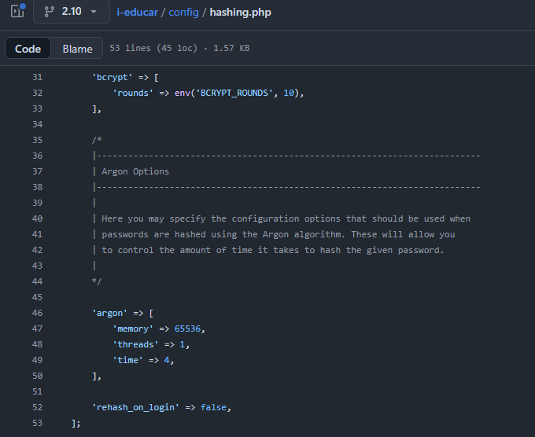 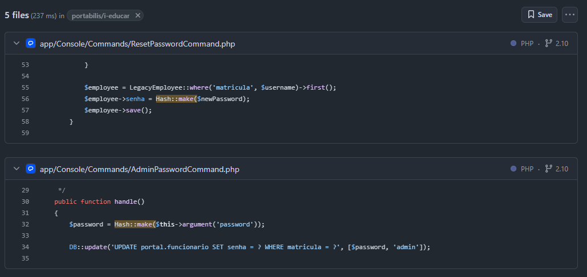 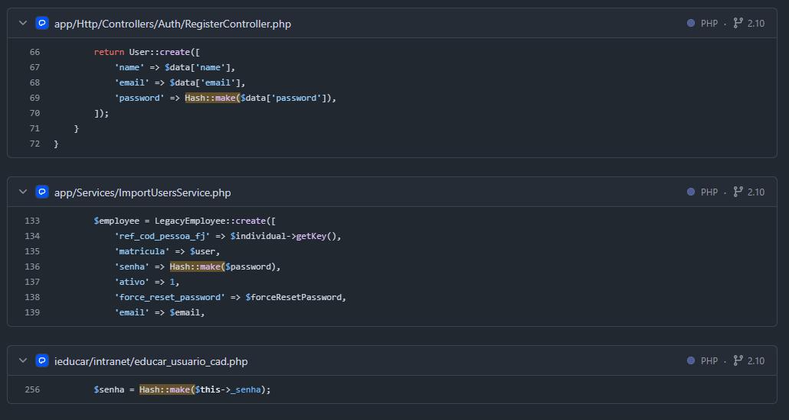
Classificação da Métrica
- Resultado: Utiliza Argon2
- Critério (da Fase 2):
- Conforme: Uso de
password_hash()ou equivalente moderno (BCrypt/Argon2) - Não conforme: Uso de
md5(),sha1()ou texto plano
- Conforme: Uso de
- Classificação: Conforme
Análise e Discussão
O sistema segue boas práticas modernas de segurança ao utilizar Argon2, atualmente o algoritmo mais recomendado por ser memory-hard e resistente a ataques massivos de força bruta. A aplicação é consistente em todo o código, incluindo trechos legados, reduzindo riscos de regressão para algoritmos inseguros.
Em caso de vazamento do banco, as senhas apresentariam forte resistência a ataques. Portanto, em relação à Questão 1: "Qual é o nível de robustez do controle de acesso do sistema?", este aspecto específico do armazenamento de credenciais contribui positivamente para a robustez do controle de acesso, representando um ponto forte na proteção das informações dos usuários.
M1.3: Tempo médio de expiração da sessão
Evidências e Dados Brutos
- Método: Análise do arquivo session.php.
- Parâmetro analisado:
SESSION_LIFETIME. - Dado Coletado: Tempo de expiração configurado: 120 minutos.
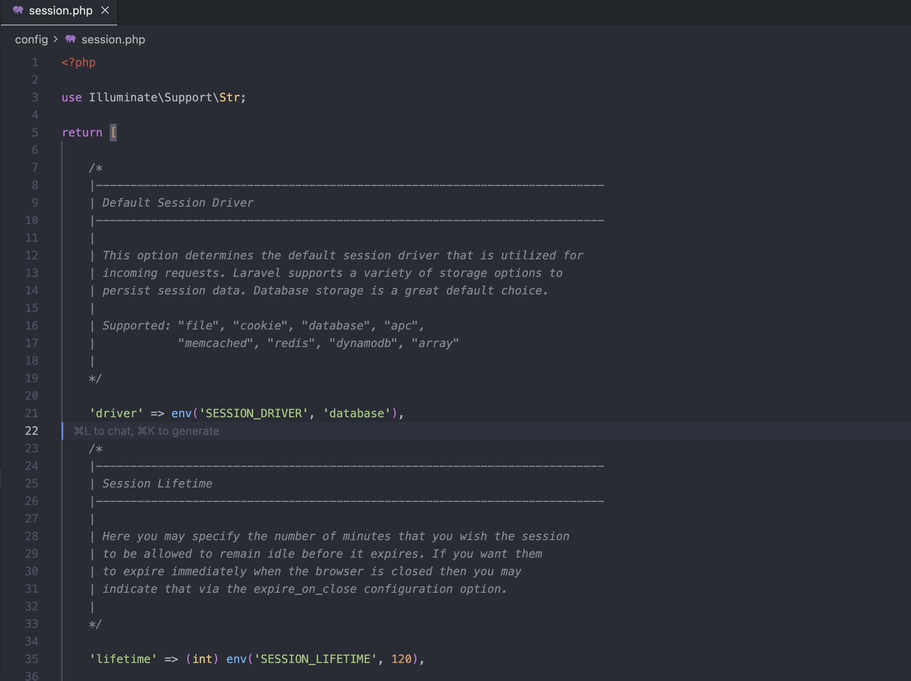
Classificação da Métrica
- Resultado: 120 minutos
- Critério (da Fase 2):
- Conforme: Menor ou igual a 60
- Não conforme: Acima de 60
- Classificação: Não conforme
Análise e Discussão
O tempo de expiração de 120 minutos contribui negativamente para responder à Questão 1: "Qual é o nível de robustez do controle de acesso do sistema?", pois representa um ponto fraco na gestão de sessões. Um tempo de expiração excessivamente longo amplia significativamente a janela de oportunidade para ataques de sequestro de sessão, especialmente em ambientes compartilhados ou computadores públicos.
Se um usuário deixar uma sessão aberta em um terminal público ou compartilhado, um atacante teria até 2 horas para explorar essa sessão ativa, potencialmente acessando dados sensíveis, realizando alterações indevidas ou exportando informações confidenciais. Embora tempos muito curtos (como 15 ou 30 minutos) possam prejudicar a usabilidade, especialmente em contextos educacionais onde sessões podem ser longas, o limite de 60 minutos recomendado representa um equilíbrio adequado entre segurança e usabilidade.
Portanto, em relação à Questão 1, este aspecto do controle de acesso apresenta robustez insuficiente na gestão de sessões.
M2.1: Percentual de ações críticas registradas em logs
Evidências e Dados Brutos
- Método: Análise de código fonte, procurando por Log:: e mecanismos de auditoria nos principais controllers.
- Ações críticas definidas (amostra realista): Login, Cadastro de Usuário, Alteração de Senha, Matrícula, Geração de Relatório.
- Dados Coletados:
- Total de ações críticas analisadas: 5
- Ações que geram entrada de log: (somente logs de erro técnico): 1
- Cálculo:
(1/5)∗100= 20%
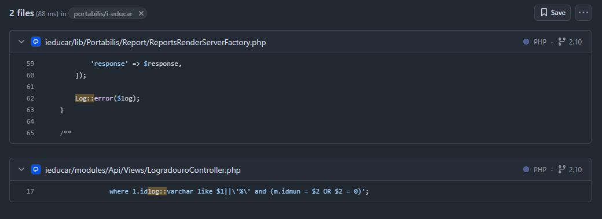
Classificação da Métrica
- Resultado: 20%
- Critério (da Fase 2):
- Excelente: ≥ 90%
- Bom: 70% a 89%
- Regular: 40% a 69%
- Insatisfatório: < 40%
- Classificação: Insatisfatório
Análise e Discussão
O resultado demonstra uma falha severa de rastreabilidade (relacionada ao OWASP A09). As principais ações de negócio — login, matrícula, alteração de dados — não são registradas, impossibilitando a execução de auditorias.
O único log encontrado refere-se a um erro de infraestrutura, não a ações do usuário. Assim, se ocorrer uma alteração indevida, acesso irregular ou fraude, não existe trilha de auditoria que permita identificar responsáveis.
Portanto, a resposta à Questão 2 é que o nível de rastreabilidade das ações críticas é insuficiente, comprometendo a capacidade do sistema de suportar investigações de segurança e conformidade com requisitos de auditoria.
M2.2: Percentual de logs com informações completas
Evidências e Dados Brutos
- Método: Amostragem e análise dos logs gerados pela aplicação.
- Informações completas: Usuário, Ação, Data/Hora.
- Dados Coletados:
- Total de logs (amostra): 1 (erro registrado em
ReportsRenderServerFactory.php) - Logs com informações completas: O log contém Data/Hora e Ação, mas não inclui o Usuário, o que é essencial para auditoria.
- Cálculo:
(0 / 1) * 100= 0%
- Total de logs (amostra): 1 (erro registrado em

Classificação da Métrica
- Resultado: 0%
- Critério (da Fase 2):
- Excelente: ≥ 80%
- Bom: 60% a 79%
- Regular: 40% a 59%
- Insatisfatório: < 40%
- Classificação: Insatisfatório
Análise e Discussão
Mesmo o único log existente apresenta baixa qualidade de auditoria. A ausência do campo “Usuário” torna impossível correlacionar o evento com a ação humana que o gerou.
Um log sem o quem é insuficiente para suporte à investigação de incidentes, dificultando monitoramento e detecção de comportamentos suspeitos.
Portanto, em relação à Questão 2, a qualidade dos logs também contribui negativamente para o nível de rastreabilidade, reforçando a conclusão de que o sistema apresenta rastreabilidade insuficiente das ações críticas.
M3.1: Densidade de testes de segurança (Testes/KLOC)
Evidências e Dados Brutos
- Método: Uso de IA para identificar testes de segurança e
cloc. - Testes de segurança: Testes que validam falhas de permissão, SQL Injection, XSS, etc.
- Dados Coletados:
- Nº total de testes de segurança: 25
- KLOC total do código de produção: 341
- Cálculo:
(Nº Testes de Segurança / (KLOC Total / 1000))= 0,07 Testes/KLOC
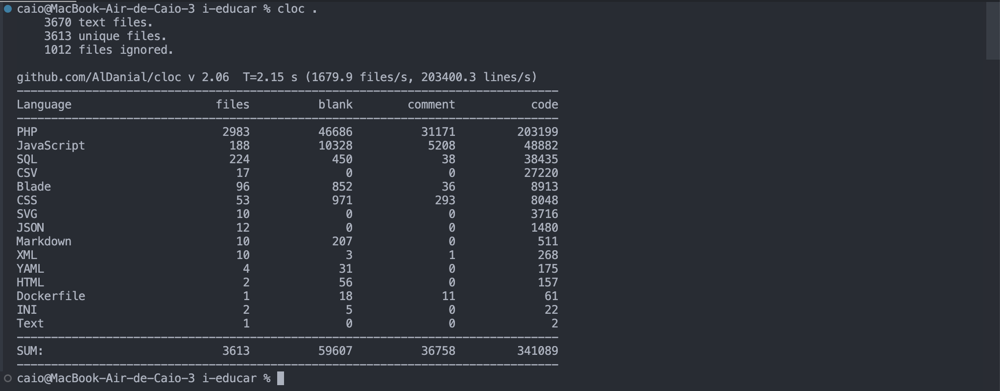

Classificação da Métrica
- Resultado: 0,07 Testes/KLOC
- Critério (da Fase 2):
- Excelente: > 1
- Bom: > 0.5
- Regular: > 0.1
- Insatisfatório: ≤ 0.1
- Classificação: Insatisfatório
Análise e Discussão
O resultado de 0,07 Testes/KLOC responde negativamente à Questão 3: "Em que medida o desenvolvimento do sistema segue práticas de segurança?", indicando que o processo de desenvolvimento apresenta maturidade muito baixa na prevenção proativa de vulnerabilidades. Este valor está significativamente abaixo do limiar mínimo considerado regular (0,1 Testes/KLOC) e muito distante dos níveis recomendados (≥ 0,5 Testes/KLOC).
A ausência ou baixíssima densidade de testes de segurança significa que a segurança do sistema depende quase exclusivamente de revisão manual de código, "sorte" ou detecção reativa de problemas em produção, o que é altamente arriscado para um sistema que trata dados sensíveis.
Em um contexto onde o i-Educar precisa garantir conformidade com a LGPD e proteger informações de menores de idade, a falta de testes automatizados de segurança representa uma falha estrutural no processo de desenvolvimento. Portanto, a resposta à Questão 3 é que o desenvolvimento não segue adequadamente práticas de segurança no que se refere à prevenção de vulnerabilidades através de testes automatizados.
M3.2: Frequência média de atualização de dependências
Evidências e Dados Brutos
- Método: Análise do histórico de commits no Github`.
- Descoberta: O sistema possui um mecanismo de atualização automática das dependências, portanto possui atualizações praticamente todos os meses.
- Dados Coletados:
- Data da última atualização de dependência: 12/11/2025
- Data da penúltima atualização: 21/10/2025
- Frequência média: a cada nova atualização disponível
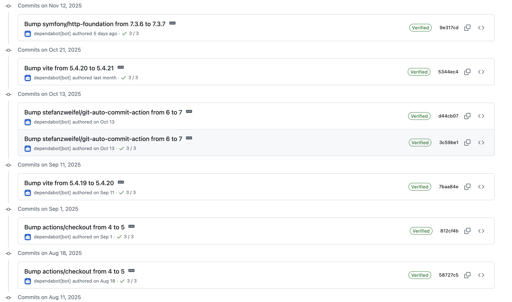
Classificação da Métrica
- Resultado: a cada 15 dias
- Critério (da Fase 2):
- Conforme: Atualização a cada ≤ 6 meses
- Não conforme: Atualização > 6 meses
- Classificação: Conforme
Análise e Discussão
A frequência de atualização de dependências (aproximadamente a cada 15 dias) responde positivamente à Questão 3: "Em que medida o desenvolvimento do sistema segue práticas de segurança?", demonstrando que o projeto adota uma prática essencial de desenvolvimento seguro. O ciclo curto de atualização (bem abaixo do limite de 6 meses estabelecido como critério) indica que a equipe mantém um processo ativo de monitoramento e atualização de componentes externos.
Dependências desatualizadas são uma das portas de entrada mais comuns para ataques modernos, como evidenciado por incidentes históricos como Log4Shell (CVE-2021-44228), que explorou vulnerabilidades em bibliotecas amplamente utilizadas. Ao manter um ciclo de atualização frequente, o projeto reduz significativamente a superfície de ataque e mitiga riscos relacionados ao OWASP A06 – Vulnerable and Outdated Components.
Portanto, em relação à Questão 3, este aspecto específico do desenvolvimento segue adequadamente práticas de segurança, representando um ponto forte do projeto na prevenção de vulnerabilidades conhecidas em componentes de terceiros.
4. Conclusão
Com base nos resultados obtidos nas sete métricas avaliadas, a característica Segurança do i-Educar foi classificada como Inaceitável, conforme os Critérios de Julgamento definidos na Fase 2. A maior parte das métricas apresentou desempenho Insatisfatório ou Não conforme, especialmente em áreas fundamentais como controle de acesso, expiração de sessão, monitoramento de ações críticas e presença de testes de segurança.
A avaliação das três questões do GQM revela um panorama preocupante: a Questão 1 sobre robustez do controle de acesso apresenta resultados mistos, com pontos fortes no armazenamento de senhas (Argon2), mas falhas críticas na autorização de rotas e na gestão de sessões. A Questão 2 sobre rastreabilidade das ações críticas foi respondida negativamente, com níveis insuficientes tanto na cobertura quanto na qualidade dos logs. A Questão 3 sobre práticas de desenvolvimento seguro também apresenta resultados mistos, com baixa densidade de testes de segurança, mas com atualização frequente de dependências.
Síntese das Avaliações
| Métrica | Resultado | Julgamento | Hipótese |
|---|---|---|---|
| M1.1 – Autorização | 15,46% | Insatisfatório | H1.1 validada |
| M1.2 – Hashing | Argon2 | Conforme | H1.2 invalidada |
| M1.3 – Expiração de Sessão | 120 min | Não conforme | H1.3 validada |
| M2.1 – Ações Críticas Logadas | 20% | Insatisfatório | H2.1 validada |
| M2.2 – Qualidade dos Logs | 0% | Insatisfatório | H2.2 validada |
| M3.1 – Testes de Segurança | 0,07 T/KLOC | Insatisfatório | H3.1 validada |
| M3.2 – Atualização de Dependências | 15 dias | Conforme | H3.2 invalidada |
Principais Pontos Fortes
-
Criptografia de Senhas (M1.2): O uso consistente de Argon2 demonstra maturidade no tratamento das credenciais dos usuários, reduzindo riscos de exposição em caso de vazamento.
-
Atualização Contínua das Dependências (M3.2): O ciclo curto de atualização (≈15 dias) mitiga vulnerabilidades decorrentes de componentes desatualizados, alinhando-se às recomendações do OWASP A06.
Principais Pontos Fracos
-
Controle de Acesso Quebrado (M1.1): A cobertura extremamente baixa de regras de autorização nas rotas críticas caracteriza um caso evidente de Broken Access Control (OWASP A01), permitindo que usuários acessem ou executem ações fora de seu perfil.
-
Expiração de Sessão Excessiva (M1.3): O tempo de 120 minutos amplia a janela de exploração para ataques de sequestro de sessão, contrariando práticas recomendadas para sistemas que tratam dados sensíveis.
-
Falta de Rastreabilidade e Auditoria (M2.1 e M2.2): A ausência de logs de ações críticas e a incompletude dos registros existentes impedem investigações e respostas a incidentes, configurando Insufficient Logging & Monitoring (OWASP A09).
-
Baixíssima Presença de Testes de Segurança (M3.1): O valor de 0,07 T/KLOC indica que falhas relacionadas a autorização, sanitização de entrada e outras vulnerabilidades comuns não são validadas automaticamente, deixando a segurança dependente apenas de revisão manual.
Avaliação final
Diante da predominância de métricas insatisfatórias, especialmente naquelas que tratam de autorização, monitoramento, expiração de sessão e prevenção de vulnerabilidades, conclui-se que o objetivo de Segurança não foi atingido.
O sistema apresenta pontos fortes importantes, mas estes não compensam os riscos estruturais identificados, especialmente considerando que o i-Educar armazena e processa dados pessoais de menores de idade, sujeitos à LGPD.
Assim, a característica Segurança, conforme definida na Fase 2, deve ser classificada como Inaceitável e requer ações prioritárias de correção para garantir conformidade e proteção adequada dos dados tratados.
Referências Bibliográficas
[1] BRASIL. Lei nº 13.709, de 14 de agosto de 2018. Lei Geral de Proteção de Dados Pessoais (LGPD). Diário Oficial da União: seção 1, Brasília, DF, 15 ago. 2018.
[2] OWASP Foundation. OWASP Top 10 – 2021: The Ten Most Critical Web Application Security Risks. 2021. Disponível em: https://owasp.org/www-project-top-ten/ . Acesso em: 18 nov. 2025.
[3] NIST. Digital Identity Guidelines (NIST SP 800-63-3). Gaithersburg, MD, 2017.
[4] NIST. Security and Privacy Controls for Information Systems (NIST SP 800-53, Rev. 5). Gaithersburg, MD, 2020.
[5] OWASP FOUNDATION. OWASP Logging Cheat Sheet. 2023.
[6] SOMMERVILLE, Ian. Engenharia de Software. 10. ed. São Paulo: Pearson, 2020.
[7] VIEIRA, Marco; MELO, Anderson; MADEIRA, Henrique. Ensaios e Testes de Segurança em Software. Revista Brasileira de Segurança da Informação, 2022.
[8] OWASP FOUNDATION. OWASP Authentication Cheat Sheet. 2023.
[9] STALLINGS, William. Cryptography and Network Security: Principles and Practice. 8. ed. Boston: Pearson, 2023.